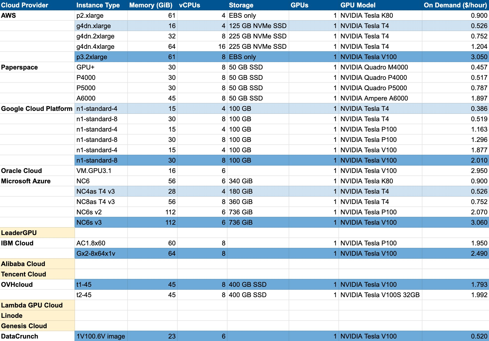

How to setup a GPU notebook server on Google Cloud Platform (GCP)
cloud
GCP is my current preferred cloud provider for GPU servers. I compared prices last year and found that GCP was the cheapest for lower-end GPUs. The notebook servers offered Vertex AI are very easy to setup. They come with PyTorch and NVIDIA/CUDA drivers already configured. I also prefer options that give me full control over the instance via an SSH connection from my terminal, which this does.
Depending on when you’re reading this, these instructions may no longer be valid. Please let me know if that’s the case!

Setup a GCP account
- Create a GCP account here.
- Request a GPU quota increase (follow the official instructions). This may take up to 48 hours.
- Enable the AI Platform via the left sidebar.
Create a notebook instance using Vertex AI
- Open the Vertex AI Workbench.
- Click New Notebook, PyTorch 1.12, then With 1 NVIDIA T4.
- Set your Notebook name.
- Choose a Region and Zone. I went with
us-central1andus-central-1b(which was the cheapest available at the time). Note that your choice of region and zone may affect GPU availability and does slightly affect pricing. - By default, you’ll be provided with an
n1-standard-4which has 4 vCPUs and 15 GB RAM, and an NVIDIA Tesla T4. If you need more resources, click the edit button next to Notebook properties, then Machine configuration, set your Machine type and GPU type, then click Create. - Check Install NVIDIA GPU driver automatically for me.
- Wait a few seconds for the notebook server to spin up. Then click OPEN JUPYTERLAB.
Shutdown your server when you’re done working
You’ll be billed for as long as the server is running. You may also be billed a smaller amount for persistent storage even while the server is shutdown.